This demo uses PC running Windows 7 as a Host. SAM E54 Xplained Pro running the demo application on top of USB printer function driver when connected to the host, enumerates as "USB Printing Support" device under USB controllers in Device Manager. This demo allows the user to print the text from Notepad or similar application in Windows using built in "Generic/Text Only" print driver.
Generic / Text Only driver simply outputs the data to the connected USB printer in raw format without performing any translation on the data to be printed.
There is no Printer head mechanism used in this demo, instead, the print data received from the host is sent to the serial terminal application running in the host itself by the demo application.
Open any serial terminal application with 115200/8-N-1 settings for the Virtual COM port associated with the EDBG.
 Note: Note: |
Check the 'Device Manager' for the Virtual COM number associated with the EDBG. |
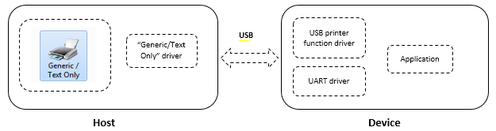
Open the Demo application in MPLAB X IDE and build the project. After successful build, program the connected SAM E54 Xplained Pro kit.
Once the programming is completed successfully, connect the "Target USB" port of SAM E54 Xplained Pro to the Host.
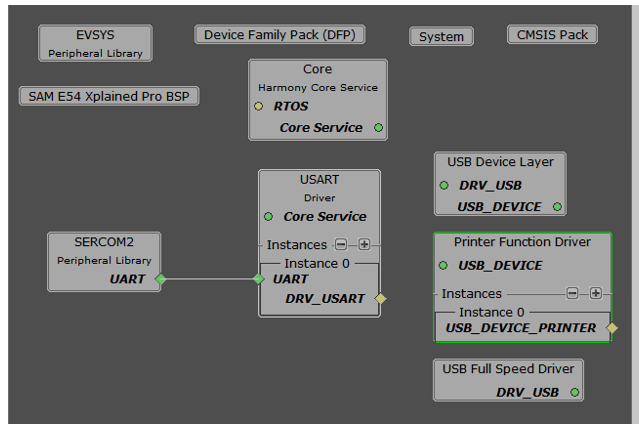
The SAM E54 Xplained Pro attached to the host PC enumerates as "USB Printing Support" in Device Manager as shown below.
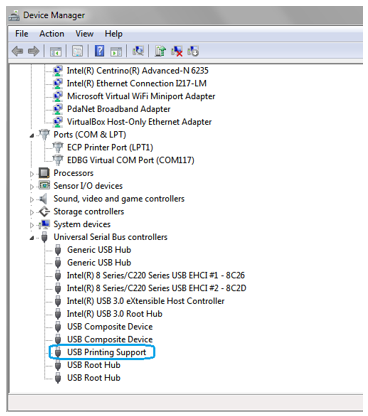
At this point, a new device by the name "Generic Text Printer Demo" should be available under Control Panel -> Devices and Printers as shown below.
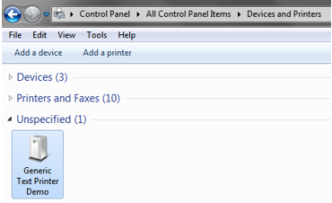
Follow the below steps to add "Generic/Text Only" printer and link it to the attached USB printer.
1) Open Devices and Printers from the Control Panel and right click then click "Add a printer"
2) In the Add Printer wizard, click "Add a local printer".
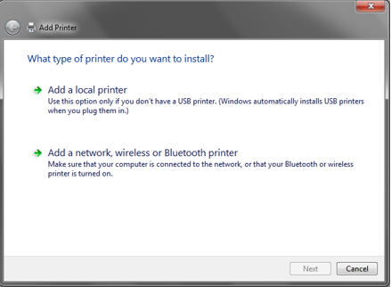
3) In the printer port selection option, choose "Use an existing port" and from the drop-down list, select "USB001 (Virtual printer port for USB)".
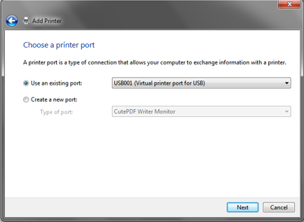
4) In the printer driver selection, select "Generic" from the Manufacturer list and "Generic / Text Only" from the Printers list.
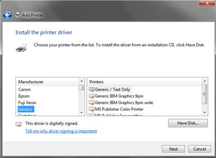
5) Use the default option in driver version select window and click Next.

6) In the printer name window, use the default name "Generic / Text Only" or provide any other name and click Next.
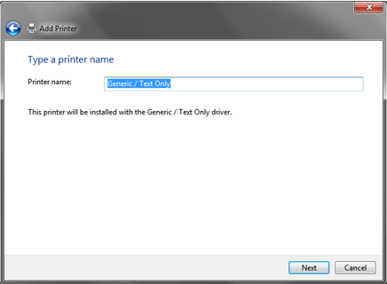
7) Click Finish to complete the Add printer wizard.
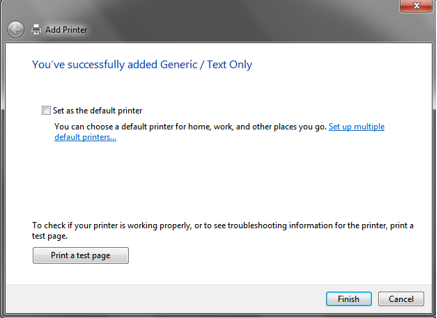
8) At this point, a new printer icon with the name provided in step #6 should be visible under Devices and Printers window as shown below.
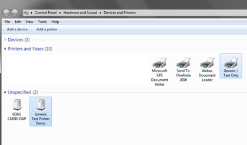
After successful installation of the "Generic / Text Only" printer, follow below steps to print a test page.
1) On the printer icon, right click and select "Printer Properties"
2) In the properties window, click "Print Test Page" as shown below.
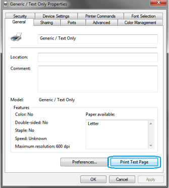
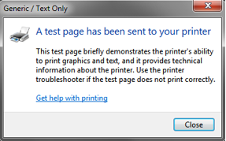
3) Now the test page data will be printed on the serial terminal application as shown below. This shows the successful reception of print data sent by the host PC.
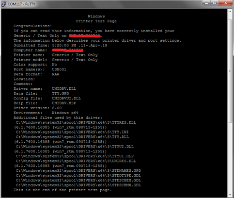
|
MPLAB Harmony USB Stack
|